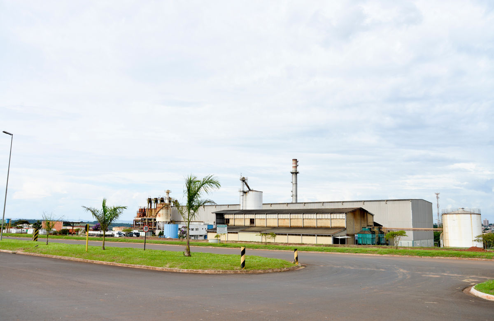

Portal operacional
Dulcini S/A
Escolha o checklist operacional
Acesse o fluxo correto para registrar evidências fotográficas com padronização, rastreabilidade e consistência no controle das operações.

Ambiente corporativo Dulcini